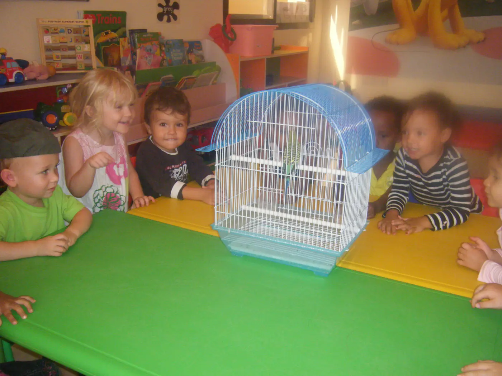
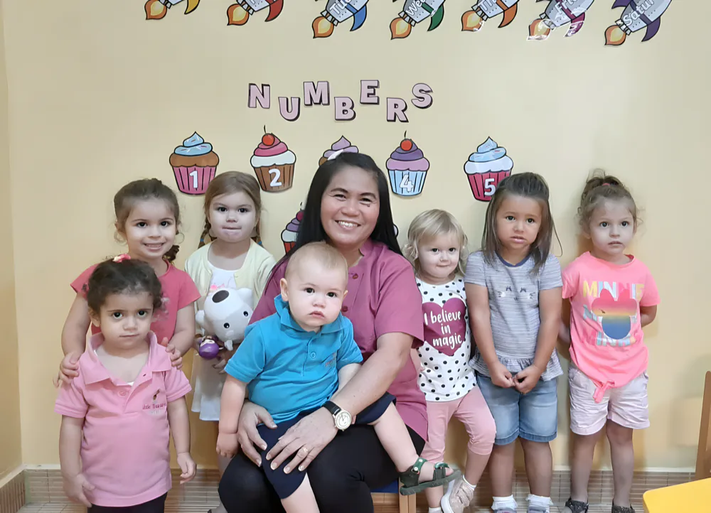
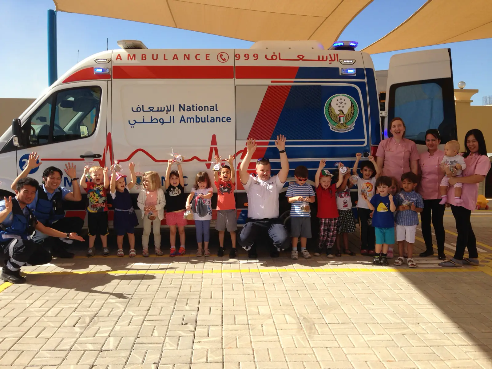

Hello, and goodbye to Mum and Dad
Children are greeted at the door and settle in with supervised free play.

A British EYFS nursery and daycare in Al Hamra, Jazeera, Ras Al Khaimah. Babies from 3 months up to Foundation Stage at 4, Monday to Friday, 7am to 6pm.
A home away from home for the little ones of Ras Al Khaimah: happy, caring and secure, run by people with a real love for children.
We follow the British Early Years Foundation Stage, with our own core values and programmes on top. Children learn by playing and exploring, indoors and out, and every child's learning journey is tracked and shared with parents.

Every class has a crew name. All of them follow the same topic each week, each at their own level.

Baby class · 3 months to walking
Soft floors, toys within reach, and time set aside for cuddles. Feeds and naps follow your home routine.
The baby room →
Toddler class · walking to 2 years
A small class of 8. Singing, sand and water, messy play, and a special focus on first words.
The toddler room →
Playgroup · getting ready for preschool
Listening, motor skills and making friends on their own, in a nurturing, safe room.
Playgroup →
Preschool · 2 to 3 years
Circle time, the topic of the week, Jolly Phonics and outdoor play twice every morning.
Preschool →
Foundation Stage 1 · 3 to 4 years
A more structured programme to reach the EYFS early learning goals before "big school".
Foundation →Our sample routine for the 2 to 4 year olds, straight from the classroom wall.
Children are greeted at the door and settle in with supervised free play.
The register, the good morning song, ABCs, numbers, shapes and colours, and a first look at the topic of the week.

Outdoor play, weather permitting, and again at 11.30. Once a week it's P.E.: running, football and races.

Art and craft, music and movement, show and tell. After lunch there's an extra: dance, musical instruments, baking or the library.

Tidy up, shoes on, bags ready, and a story while parents arrive. Daycare carries on until 6pm.
"I have many years of childcare experience and I am honored to have a career that I absolutely love and enjoy on a daily basis."

Miss GemmaOwner and Nursery Manager · Masters in Early Childhood Education, University of Sheffield



Places are given as spaces come up. You're welcome to visit at any time, but book an appointment if you'd like a guided tour and a chat with the nursery manager.

To register, bring
Once your child has a place
Between Al Jazeera and Al Hamra Village, Ras Al Khaimah
PO Box 85641, Al Hamra, Jazeera. You can see us from the main road.
| Monday | 7am – 6pm |
| Tuesday | 7am – 6pm |
| Wednesday | 7am – 6pm |
| Thursday | 7am – 6pm |
| Friday | 7am – 6pm |
| Saturday & Sunday | Closed |